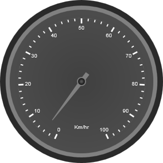
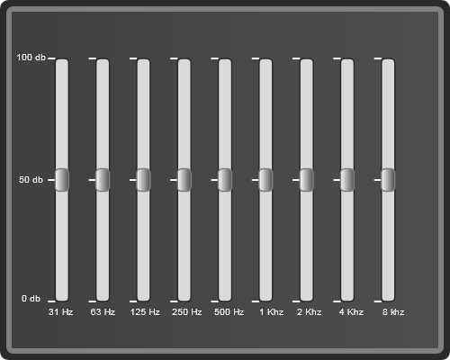

Essential Gauge for ASP.NET can be used to create sophisticated dashboards, clocks, industrial equipment, medical equipment etc. It evaluates the values of the scales and presents it on a scale. You can build high quality dashboards, process controls, gadgets and clocks quickly, using this product.
The following are few examples of IT scenarios for using Essential Gauges:
1. Circular Gauge
The circular gauge can be used in various ways within an
application.
The most well-known example of a circular gauge is a
speedometer, which denotes the speed of a vehicle.

2. Linear Gauge
There are various applications in which Linear Gauge can be used. One such real world application of Linear Gauge is the graphic Equalizer which is shown below:

Key Features of Essential Gauge for ASP.NET
The important features of Gauge Web control for circular and linear gauges are listed below:
· Choice of multiple Scales and Pointers for a single gauge
· Multiple-range support
· Labels and tick support
· 14 built-in skins
· Clockwise and Anticlockwise support
· Complete view customization support
· Variable (vertical or horizontal) orientation (for Linear Gauge only)
List of Controls:
The following are the list of Essential Gauge Web controls:
· Circular Gauge
· Linear Gauge